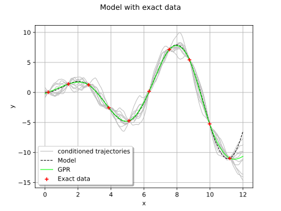
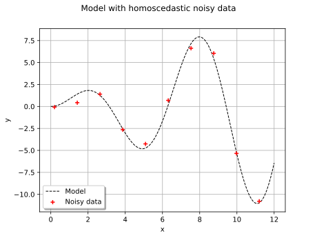
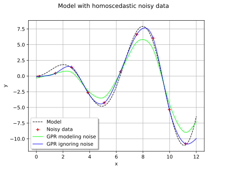
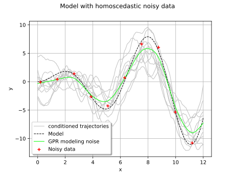
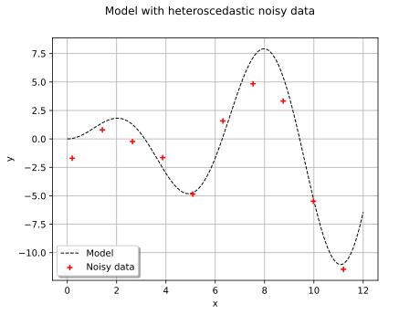
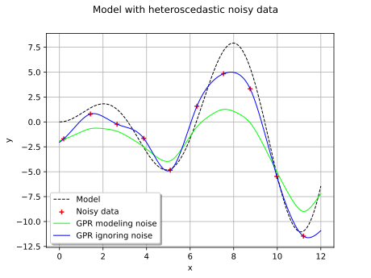
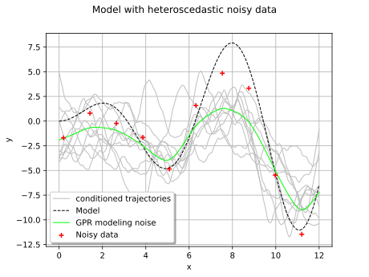
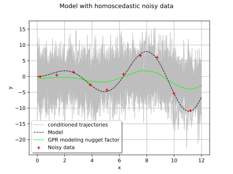
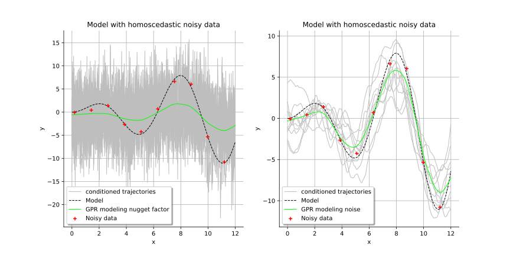

Note
Go to the end to download the full example code.
Gaussian Process Regression: nugget effect and noise¶
In this example, we show how to estimate a Gaussian Process Regression surrogate model (refer to Gaussian process regression) from a noisy data set of the model. We consider the following cases:
Case 1: No noise is considered, assuming that the output values are exact,
Case 2: We consider a homoscedastic noise on the output values,
Case 3: We consider a heteroscedastic noise on the output values,
Case 4: We consider a homoscedastic noise modeled as a nugget factor.
Both Case 2 and Case 4 model a homoscedastic noise on the output values of the model. But the two models are quite different:
the
setNoise()method of theGaussianProcessFittertakes noise into account only in the expression of the model likelihood, in the evaluation of the covariance parameters,the
setNuggetFactor()method of theCovarianceModelmodifies the covariance model of the Gaussian process and keeps it modified once the parameters have been estimated. As a result, the trajectories of the Gaussian process become less smooth than with the first model.
Modeling a noise on the output values as a nugget effect is interesting to simulate some sensors which have a finite precision and generates some output values perturbated by a White Noise process.
On the contrary, taking noise into account with the setNoise() method
impacts the estimation of the covariance parameters
but not the regularity of the process.
Introduction¶
We consider the model ![\model: [0,12] \rightarrow \Rset]() defined by:
defined by:
![y = \model (x) = x \sin(x)]()
We want to create a surrogate of this model using Gaussian Process Regression, from the data set defined by:
![y_k = x_k \sin(x_k), \quad 1 \leq k \leq \sampleSize]()
import openturns as ot
import openturns.experimental as otexp
import openturns.viewer as otv
import math as m
First let us introduce some useful function. In order to observe the function and the location of the points in the input design of experiments, we define plot_1d_data.
# sphinx_gallery_thumbnail_number = 10
def plot_1d_data(x_data, y_data, type="Curve", legend=None, color=None, linestyle=None):
"""Plot the data (x_data,y_data) as a Cloud/Curve"""
if type == "Curve":
graphF = ot.Curve(x_data, y_data)
else:
graphF = ot.Cloud(x_data, y_data)
if legend is not None:
graphF.setLegend(legend)
if color is not None:
graphF.setColor(color)
if linestyle is not None:
graphF.setLineStyle(linestyle)
return graphF
We define the model to be approximated.
g = ot.SymbolicFunction(["x"], ["x * sin(x)"])
We define a train data set.
xmin = 0.0
xmax = 12.0
n_train = 10
step = (xmax - 1 - xmin) / (n_train - 1.0)
x_train = ot.RegularGrid(xmin + 0.2, step, n_train).getVertices()
y_train = g(x_train)
n_train = x_train.getSize()
In order to compare the function and its metamodel, we use a test (i.e. validation) design of experiments made
of a regular grid of 100 points from 0 to 12.
Then we convert this grid into a Sample and we compute the outputs of the function on this
sample.
n_test = 500
step = (xmax - xmin) / (n_test - 1)
myRegularGrid = ot.RegularGrid(xmin, step, n_test)
x_test = myRegularGrid.getVertices()
y_test = g(x_test)
We plot the model.
graph = ot.Graph(r"Model $x \rightarrow x\sin(x)$", "", "", True, "")
graph.add(
plot_1d_data(x_test, y_test, legend="Model", color="black", linestyle="dashed")
)
graph.setAxes(True)
graph.setXTitle("X")
graph.setYTitle("Y")
graph.setLegendPosition("lower left")
view = otv.View(graph)

We use the ConstantBasisFactory class to define the trend and the MaternModel class to define the covariance model.
This Matérn model is based on the regularity parameter ![\nu=3/2]() .
.
ot.ResourceMap.SetAsScalar('CovarianceModel-DefaultNuggetFactor', 0.0)
dimension = 1
basis = ot.ConstantBasisFactory(dimension).build()
Case 1: Ignore any noise¶
We introduce no noise here: it means that we assume that the output values are exact. We plot the surrogate model: we see that it interpolates the data set, as expected.
covarianceModel = ot.MaternModel([1.0] * dimension, 1.5)
fitter_algo = ot.GaussianProcessFitter(x_train, y_train, covarianceModel, basis)
fitter_algo.run()
fitter_result_noNoise = fitter_algo.getResult()
We get the estimated parameters of the covariance model.
estimated_cov_noNoise = fitter_result_noNoise.getCovarianceModel()
print('Case 1: ignore any noise')
print('Estimated covariance model with the homoscedastic noise = ', estimated_cov_noNoise)
Case 1: ignore any noise
Estimated covariance model with the homoscedastic noise = MaternModel(scale=[2.45291], amplitude=[6.7043], nu=1.5)
We create the GPR metamodel.
gpr_algo_noNoise = ot.GaussianProcessRegression(fitter_result_noNoise)
gpr_algo_noNoise.run()
gpr_result_noNoise = gpr_algo_noNoise.getResult()
gprMM_noNoise = gpr_result_noNoise.getMetaModel()
graph = ot.Graph("Model with exact data", "x", "y", True, "lower left")
graph.add(
plot_1d_data(x_test, y_test, legend="Model", color="black", linestyle="dashed")
)
graph.add(plot_1d_data(x_train, y_train, type="Cloud", legend="Exact Data", color="red"))
graph.add(
plot_1d_data(x_test, gprMM_noNoise(x_test), legend="GPR", color="green")
)
view = otv.View(graph)

We can draw some trajectories of the resulting conditioned Gaussian process using the class
ConditionedGaussianProcess built from a GaussianProcessRegressionResult.
We create the conditioned Gaussian process. Then we generate some trajectories.
process_noNoise = otexp.ConditionedGaussianProcess(gpr_result_noNoise, myRegularGrid)
traj_noNoise = process_noNoise.getSample(10)
graph_traj_noNoise = ot.Graph(r"Model with exact data", "x", "y", True, "lower left")
graph_traj_noNoise.add(traj_noNoise.drawMarginal())
graph_traj_noNoise.setLegends(['conditioned trajectories'] + [''] * 9)
graph_traj_noNoise.setColors(['grey'] * 10)
graph_traj_noNoise.add(
plot_1d_data(x_test, y_test, legend="Model", color="black", linestyle="dashed")
)
graph_traj_noNoise.add(
plot_1d_data(x_test, gprMM_noNoise(x_test), legend="GPR", color="green")
)
graph_traj_noNoise.add(plot_1d_data(x_train, y_train, type="Cloud", legend="Exact data", color="red"))
view = otv.View(graph_traj_noNoise)

Case 2: Introduce a homoscedastic noise¶
We want to model a noise on each output value of the model. This noise is the same
for output ![y_i]() value and is modeled as a
value and is modeled as a Normal distribution
which is centered with a variance denoted by ![\sigma^2 = 0.5]() .
.
variance_point_homosc = [0.25] * n_train
In order to illustrate some noisy output values, we add a random noise to each output, following the noise distribution.
noise_homosk = ot.Normal(0, m.sqrt(variance_point_homosc[0])).getSample(n_train)
y_train_homosc = y_train + noise_homosk
We plot the model and the noisy train data which is not on the graph of the model.
graph = ot.Graph(r"Model with homoscedastic noisy data", "x", "y", True, "lower left")
graph.add(
plot_1d_data(x_test, y_test, legend="Model", color="black", linestyle="dashed")
)
graph.add(
plot_1d_data(x_train, y_train_homosc, type="Cloud", legend="Noisy data", color="red")
)
view = otv.View(graph)

We define the Gaussian Process Fitter on the noisy data.
covarianceModel = ot.MaternModel([1.0] * dimension, 1.5)
fitter_algo = ot.GaussianProcessFitter(x_train, y_train_homosc, covarianceModel, basis)
If we ignore the noise, we get the following surrogate model.
fitter_algo.run()
fitter_result = fitter_algo.getResult()
We get the estimated parameters of the covariance model.
estimated_cov = fitter_result.getCovarianceModel()
print('Case 2: homoscedastic noise')
print('Estimated covariance model with the homoscedastic noise = ', estimated_cov)
Case 2: homoscedastic noise
Estimated covariance model with the homoscedastic noise = MaternModel(scale=[2.1802], amplitude=[6.29094], nu=1.5)
We create the GPR metamodel.
gpr_algo_1 = ot.GaussianProcessRegression(fitter_result)
gpr_algo_1.run()
gpr_result_1 = gpr_algo_1.getResult()
gprMM_1 = gpr_result_1.getMetaModel()
Now we do not ignore the noise on the output values any more and we add it to the algorithm.
covarianceModel = ot.MaternModel([1.0] * dimension, 1.5)
fitter_algo = ot.GaussianProcessFitter(x_train, y_train_homosc, covarianceModel, basis)
fitter_algo.setNoise(variance_point_homosc)
fitter_algo.run()
fitter_result = fitter_algo.getResult()
gpr_algo_homosc = ot.GaussianProcessRegression(fitter_result)
gpr_algo_homosc.run()
gpr_result_homosc = gpr_algo_homosc.getResult()
gprMM_homosc = gpr_result_homosc.getMetaModel()
We plot now the resulting surrogate model. We can see that the GPR metamodel does not interpolate the train set any more due to the introduction of the noise.
graph = ot.Graph(r"Model with homoscedastic noisy data", "x", "y", True, "lower left")
graph.add(
plot_1d_data(x_test, y_test, legend="Model", color="black", linestyle="dashed")
)
graph.add(plot_1d_data(x_train, y_train_homosc, type="Cloud", legend="Noisy data", color="red"))
graph.add(
plot_1d_data(x_test, gprMM_homosc(x_test), legend="GPR modeling noise", color="green")
)
graph.add(
plot_1d_data(x_test, gprMM_1(x_test), legend="GPR ignoring noise", color="blue")
)
view = otv.View(graph)

We can draw some trajectories of the resulting conditioned Gaussian process still using the class
ConditionedGaussianProcess as previoulsy.
process_homosc = otexp.ConditionedGaussianProcess(gpr_result_homosc, myRegularGrid)
traj_homosc = process_homosc.getSample(10)
graph_traj_homosc = ot.Graph(r"Model with homoscedastic noisy data", "x", "y", True, "lower left")
graph_traj_homosc.add(traj_homosc.drawMarginal())
graph_traj_homosc.setLegends(['conditioned trajectories'] + [''] * 9)
graph_traj_homosc.setColors(['grey'] * 10)
graph_traj_homosc.add(
plot_1d_data(x_test, y_test, legend="Model", color="black", linestyle="dashed")
)
graph_traj_homosc.add(
plot_1d_data(x_test, gprMM_homosc(x_test), legend="GPR modeling noise", color="green")
)
graph_traj_homosc.add(plot_1d_data(x_train, y_train_homosc, type="Cloud", legend="Noisy data", color="red"))
view = otv.View(graph_traj_homosc)

Case 3: Introduce a heteroscedastic noise¶
We want to model a noise on each output value of the model. This noise depends on the
output value and is modeled as a Normal distribution
which is centered with a variance denoted by ![\sigma_i^2]() .
We generate a list of
.
We generate a list of ![\sampleSize]() variances.
variances.
variance_point_heterosc = ot.Uniform(0.0, 1.5).getSample(n_train).asPoint()
Once more, in order to illustrate some noisy output values, we add a random noise to each output, following the noise distribution.
noise_heterosk = ot.Sample(0, 1)
for i in range(n_train):
noise_i = ot.Normal(0, m.sqrt(variance_point_heterosc[i])).getRealization()
noise_heterosk.add(noise_i)
y_train_heterosc = y_train + noise_heterosk
We plot the model and the noisy train data which is not on the graph of the model.
graph = ot.Graph(r"Model with heteroscedastic noisy data", "x", "y", True, "lower left")
graph.add(
plot_1d_data(x_test, y_test, legend="Model", color="black", linestyle="dashed")
)
graph.add(
plot_1d_data(x_train, y_train_heterosc, type="Cloud", legend="Noisy data", color="red")
)
view = otv.View(graph)

We define the Gaussian Process Fitter on the noisy data.
covarianceModel = ot.MaternModel([1.0] * dimension, 1.5)
fitter_algo = ot.GaussianProcessFitter(x_train, y_train_heterosc, covarianceModel, basis)
If we ignore the noise, we get the following surrogate model.
fitter_algo.run()
fitter_result = fitter_algo.getResult()
We get the estimated parameters of the covariance model.
estimated_cov = fitter_result.getCovarianceModel()
print('Case 3: heteroscedastic noise')
print('Estimated covariance model with the heteroscedastic noise = ', estimated_cov)
Case 3: heteroscedastic noise
Estimated covariance model with the heteroscedastic noise = MaternModel(scale=[2.1177], amplitude=[5.73932], nu=1.5)
We create the GPR metamodel.
gpr_algo_2 = ot.GaussianProcessRegression(fitter_result)
gpr_algo_2.run()
gpr_result_2 = gpr_algo_2.getResult()
gprMM_2 = gpr_result_2.getMetaModel()
Now we do not ignore the noise on output values and we add it to the algorithm.
fitter_algo = ot.GaussianProcessFitter(x_train, y_train_heterosc, covarianceModel, basis)
fitter_algo.setNoise(variance_point_heterosc)
fitter_algo.run()
fitter_result = fitter_algo.getResult()
gpr_algo_heterosc = ot.GaussianProcessRegression(fitter_result)
gpr_algo_heterosc.run()
gpr_result_heterosc = gpr_algo_heterosc.getResult()
gprMM_heterosc = gpr_result_heterosc.getMetaModel()
We plot now the resulting surrogate model. We can see that the Gaussian process regression does not interpolate the train set any more due to the introduction of the noise. We could compute the mean square error betwwen the model and the metamodels and show that the distribution of the errors is more tight when we take into account the noise modeling.
graph = ot.Graph(r"Model with heteroscedastic noisy data", "x", "y", True, "lower left")
graph.add(
plot_1d_data(x_test, y_test, legend="Model", color="black", linestyle="dashed")
)
graph.add(plot_1d_data(x_train, y_train_heterosc, type="Cloud", legend="Noisy data", color="red"))
graph.add(
plot_1d_data(x_test, gprMM_heterosc(x_test), legend="GPR modeling noise", color="green")
)
graph.add(
plot_1d_data(x_test, gprMM_2(x_test), legend="GPR ignoring noise", color="blue")
)
view = otv.View(graph)

We can draw some trajectories of the resulting conditioned Gaussian process as previoulsy. We can see that the trajectories have kept the regularity of the initial Matern model.
process_heterosc = otexp.ConditionedGaussianProcess(gpr_result_heterosc, myRegularGrid)
traj_heterosc = process_heterosc.getSample(10)
graph_traj_heterosc = ot.Graph(r"Model with heteroscedastic noisy data", "x", "y", True, "lower left")
graph_traj_heterosc.add(traj_heterosc.drawMarginal())
graph_traj_heterosc.setLegends(['conditioned trajectories'] + [''] * 9)
graph_traj_heterosc.setColors(['grey'] * 10)
graph_traj_heterosc.add(
plot_1d_data(x_test, y_test, legend="Model", color="black", linestyle="dashed")
)
graph_traj_heterosc.add(
plot_1d_data(x_test, gprMM_heterosc(x_test), legend="GPR modeling noise", color="green")
)
graph_traj_heterosc.add(plot_1d_data(x_train, y_train_heterosc, type="Cloud", legend="Noisy data", color="red"))
view = otv.View(graph_traj_heterosc)

Case 4: Introduce a nugget effect¶
We can introduce the homoscedastic noise on the output values of the model as a nugget effect,
using the setNuggetFactor() method of the
CovarianceModel.
We consider the Matern covariance model defined previously and we activate the estimation of the nugget factor.
covarianceModel = ot.MaternModel([1.0] * dimension, 1.5)
covarianceModel.activateNuggetFactor(True)
fitter_algo_nugget = ot.GaussianProcessFitter(x_train, y_train_homosc, covarianceModel, basis)
fitter_algo_nugget.run()
fitter_result_nugget = fitter_algo_nugget.getResult()
We get the estimated parameters of the covariance model and the nugget factor
![\varepsilon_{nugget}]() .
.
estimated_cov_nugget = fitter_result_nugget.getCovarianceModel()
print('Case 4: nugget effect')
print('Estimated covariance model with the nugget factor = ', estimated_cov_nugget)
print('Estimated nugget factor = ', estimated_cov_nugget.getNuggetFactor())
Case 4: nugget effect
Estimated covariance model with the nugget factor = MaternModel(scale=[1.13448], amplitude=[2.77258], nu=1.5)
Estimated nugget factor = 2.4417556250992196
gpr_algo_nuggetF = ot.GaussianProcessRegression(fitter_result_nugget)
gpr_algo_nuggetF.run()
gpr_result_nuggetF = gpr_algo_nuggetF.getResult()
gprMM_nuggetF = gpr_result_nuggetF.getMetaModel()
We draw the graph to compare the nugget effect and the noise modeling.
graph = ot.Graph(r"Model with homoscedastic noisy data", "x", "y", True, "lower left")
graph.add(
plot_1d_data(x_test, y_test, legend="Model", color="black", linestyle="dashed")
)
graph.add(plot_1d_data(x_train, y_train_homosc, type="Cloud", legend="Noisy data", color="red"))
graph.add(
plot_1d_data(x_test, gprMM_nuggetF(x_test), legend="GPR modeling nugget factor", color="green")
)
graph.add(
plot_1d_data(x_test, gprMM_homosc(x_test), legend="GPR modeling noise", color="blue")
)
view = otv.View(graph)

We can draw some trajectories of the resulting conditioned Gaussian process as previoulsy. We can see that the trajectories are not as smooth as the initial Matern model any more.
process_nuggetF = otexp.ConditionedGaussianProcess(gpr_result_nuggetF, myRegularGrid)
traj_nuggetF = process_nuggetF.getSample(10)
graph_traj_nuggetF = ot.Graph(r"Model with homoscedastic noisy data", "x", "y", True, "lower left")
graph_traj_nuggetF.add(traj_nuggetF.drawMarginal())
graph_traj_nuggetF.setLegends(['conditioned trajectories'] + [''] * 9)
graph_traj_nuggetF.setColors(['grey'] * 10)
graph_traj_nuggetF.add(
plot_1d_data(x_test, y_test, legend="Model", color="black", linestyle="dashed")
)
graph_traj_nuggetF.add(
plot_1d_data(x_test, gprMM_nuggetF(x_test), legend="GPR modeling nugget factor", color="green")
)
graph_traj_nuggetF.add(plot_1d_data(x_train, y_train_homosc, type="Cloud", legend="Noisy data", color="red"))
view = otv.View(graph_traj_nuggetF)

To facilitate comparison, we draw the trajectories generated by the Gaussian process built with nugget factor or with noise.
grid = ot.GridLayout(1, 2)
grid.setGraph(0, 0, graph_traj_nuggetF)
grid.setGraph(0, 1, graph_traj_homosc)
view = otv.View(grid)

Display all figures
otv.View.ShowAll()